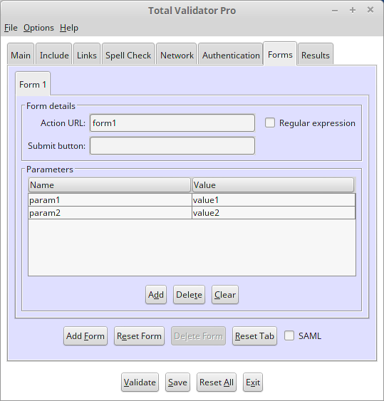

Introduction
All of the options that appear on the Forms tab of the Pro tool are described below.

This tab allows you to look for one or more matching forms on your website and submit this form, together with any values you wish to send, to your web server. This allows you to validate the response from your server and is often used to log into a site to validate restricted pages.
For more information on using login forms see the Login forms page and always ensure that you skip any logoff and delete links.
 top
topAction URL
When the tool is validating the site it will look for a form with an 'action' attribute, or button or input elements with a 'formaction' attribute, which matches the value entered here. If it finds a match it will submit the form to the server using the options on the rest of this tab.
Note that every form that matches will be submitted as there can be more than one. But only the first match on a given page will be submitted. Also the 'method' or 'formmethod' attribute of the form is used to decide whether the tool will use a GET or POST to submit the form.
The Action URL is normally an exact match for the 'action' or 'formaction' attributes, but you can use the 'Regular expression' checkbox to specify that the Action URL is a regular expression instead. This may allow you to more easily match the required form.
If the Action URL is left blank, then this will match all forms that have no 'action' or 'formaction' attribute. In this case the form will be submitted to the same URL as the page itself.
Submit button
Many forms have more than one 'submit' button. For example one button may be used to send the form details, and another to reset them.
For normal forms, you can enter the name of the button you wish to send with the form. If a matching button is found with the same 'name' attribute, then the value of this button will be submitted with the form, and any other submit buttons ignored. If a match cannot be found then no submit buttons will be sent. Finally, if you do not enter anything in this field, then the values of all the submit buttons on the form will be sent.
For forms submitted using a button or input element, only the 'name' of the element (if any) will be submitted with the form, and so this field is not relevant.
Parameters
When the form is submitted the default values of any form controls (checkboxes, menus, text boxes, hidden controls, etc.) will be sent to the server just like a normal browser would do.
Normally, you will want to override some of these values with your own, such as a user id or password value, or add some extra parameters using the table provided.
Double-click on the Name or Value to enter the parameter details. You can add extra lines or delete the currently selected one using the Add and Delete buttons at the bottom. When you've finished editing the text make sure that you click outside the table cell to finish, or your changes may not be saved.
Note that any parameter with a blank value will be ignored, and you may enter more than
one parameter with the same name (this is a valid thing to do). Also, all parameters will be
submitted using application/x-www-form-urlencoded encoding, no matter what encoding
is specified on the form.
Bottom buttons
More than one form may be specified using the buttons along the bottom of the tab. Use Add Form to add a new tab to enter another forms' details. Reset Form will reset all of the fields of the currently selected form to blank. Delete Form will delete the currently selected form and Reset Tab will delete all of the forms.
SAML Authentication
If this option is selected then Total Validator assumes that all of the forms are part of an attempt to authenticate using a SAML-based system such as Shibboleth or Athens. Please see our dedicated SAML page to ensure you configure Total Validator correctly.
Note that setting this option when not using SAML will almost certainly cause your forms to fail to work properly.